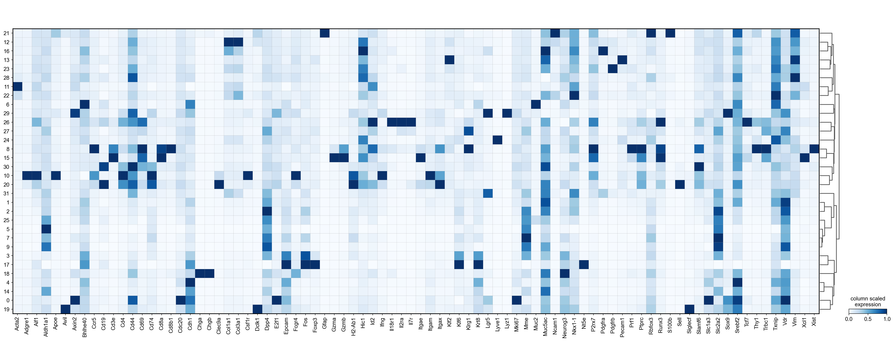

import scanpy as sc
import anndata as ad
import numpy as np
import pandas as pd
import matplotlib.pyplot as plt
import seaborn as sns
from scipy import stats
import swifter
sc.settings.verbosity = 3 # verbosity: errors (0), warnings (1), info (2), hints (3)
sc.settings.figdir = "./figures/umap/"
sc.set_figure_params(dpi=80, dpi_save=300, frameon=True, vector_friendly=True, figsize=[8,5])Annotation
Perform Normalization, Dimensional reduction and annotate the cells
adata = ad.read_h5ad("anndata_after_qc.h5ad")
adataAnnData object with n_obs × n_vars = 105262 × 499
obs: 'x', 'y', 'cluster', 'n_transcripts', 'density', 'elongation', 'area', 'avg_confidence', 'cell_shape', 'n_genes', 'n_genes_by_counts', 'total_counts'
var: 'n_cells', 'n_cells_by_counts', 'mean_counts', 'pct_dropout_by_counts', 'total_counts'
uns: 'points'
obsm: 'spatial', 'unrolled'markers = [
"Xist",
"Epcam"
]sc.experimental.pp.highly_variable_genes(
adata, flavor="pearson_residuals", n_top_genes=2000
)extracting highly variable genes
--> added
'highly_variable', boolean vector (adata.var)
'highly_variable_rank', float vector (adata.var)
'highly_variable_nbatches', int vector (adata.var)
'highly_variable_intersection', boolean vector (adata.var)
'means', float vector (adata.var)
'variances', float vector (adata.var)
'residual_variances', float vector (adata.var)fig, ax = plt.subplots(1, 1, figsize=(12, 6))
hvgs = adata.var["highly_variable"]
ax.scatter(
adata.var["mean_counts"], adata.var["residual_variances"], s=3, edgecolor="none"
)
ax.scatter(
adata.var["mean_counts"][hvgs],
adata.var["residual_variances"][hvgs],
c="tab:red",
label="selected genes",
s=3,
edgecolor="none",
)
ax.scatter(
adata.var["mean_counts"][np.isin(adata.var_names, markers)],
adata.var["residual_variances"][np.isin(adata.var_names, markers)],
c="k",
label="known marker genes",
s=50,
edgecolor="none",
)
ax.set_xscale("log")
ax.set_xlabel("mean expression")
ax.set_yscale("log")
ax.set_ylabel("residual variance")
ax.spines["right"].set_visible(False)
ax.spines["top"].set_visible(False)
ax.yaxis.set_ticks_position("left")
ax.xaxis.set_ticks_position("bottom")
plt.legend(loc='upper left')<matplotlib.legend.Legend at 0x7f172df60d00>#keep raw and depth-normalized counts for later
adata.layers["raw"] = adata.X.copy()
adata.layers["sqrt_norm"] = np.sqrt(
sc.pp.normalize_total(adata, inplace=False)["X"]
)normalizing counts per cell
finished (0:00:00)sc.experimental.pp.normalize_pearson_residuals(adata)computing analytic Pearson residuals on adata.X
finished (0:00:00)sc.pp.pca(adata, n_comps=30)computing PCA
on highly variable genes
with n_comps=30
finished (0:00:02)sc.pp.neighbors(adata, n_neighbors=30, n_pcs=30, metric='correlation')computing neighbors
using 'X_pca' with n_pcs = 30
finished: added to `.uns['neighbors']`
`.obsp['distances']`, distances for each pair of neighbors
`.obsp['connectivities']`, weighted adjacency matrix (0:00:29)sc.tl.umap(adata, min_dist=0.3)computing UMAP
finished: added
'X_umap', UMAP coordinates (adata.obsm) (0:01:01)sc.tl.leiden(adata)running Leiden clustering
finished: found 32 clusters and added
'leiden', the cluster labels (adata.obs, categorical) (0:00:57)Annotation
import csv
with open('Ucell_celltypes_v1.csv', "r") as f:
reader = csv.reader(f)
marker_genes_dict = {}
for row in reader:
key = row[0]
# this removes the empty values
marker_genes_dict[key] = [i for i in row[1:] if i]all_marker_genes = np.concatenate([*marker_genes_dict.values()])
all_marker_genes = [i.strip(r"\+|\-") for i in all_marker_genes]
all_marker_genes = np.unique(all_marker_genes)
all_marker_genes = np.append(all_marker_genes, 'leiden')def ceiling_division(numerator, denominator):
return -(-numerator // denominator)
ncol = 7
nrow = ceiling_division(len(all_marker_genes),ncol)
fig = plt.figure(figsize=(4*ncol, 3*nrow))
fig.tight_layout()
for i, m in enumerate(all_marker_genes):
ax = plt.subplot(nrow, ncol, i+1)
sc.pl.umap(adata, color=m, layer="sqrt_norm", ax=ax, show=False)
ax.set(xlabel=None)
ax.set(ylabel=None)
fig.savefig("./figures/umap/Marker_genes.png", bbox_inches='tight')/home/max/QnapSync/Documents/Postdoc/Lab/Projects/Merscope/Slide01_Doudenum/.venv/lib/python3.10/site-packages/scanpy/plotting/_tools/scatterplots.py:392: UserWarning: No data for colormapping provided via 'c'. Parameters 'cmap' will be ignored
cax = scatter(
Let’s create our own U Cell implementation
def create_rankings(ex_mtx: pd.DataFrame, seed=None) -> pd.DataFrame:
"""
Create a rankings dataframe from a single cell expression profile dataframe.
:param ex_mtx: The expression profile matrix. The rows should correspond to different cells, the columns to different
genes (n_cells x n_genes).
:return: A genome rankings dataframe (n_cells x n_genes).
"""
return (
ex_mtx.sample(frac=1.0, replace=False, axis=1, random_state=seed)
.rank(axis=1, ascending=False, method="first", na_option="bottom")
.astype('uint32')
)
def u_stat(ranks, maxRank=100):
ranks = ranks.copy()
ranks[ranks > maxRank] = maxRank+1
rank_sum = ranks.sum(axis =1)
len_sig = len(ranks.columns)
if len_sig==0:
return 0
u_value = rank_sum - (len_sig * (len_sig + 1))/2
auc = 1 - u_value/(len_sig * maxRank)
return(auc)def _calc_score(m, signature):
sig_neg = [m.strip(r"\+|\-") for m in signature if m.endswith("-")]
sig_pos = [m.strip(r"\+|\-") for m in signature if not m.endswith("-")]
return(u_stat(ranks = m[sig_pos]) - u_stat(ranks = m[sig_neg]))
def calc_scores(adata, marker_genes_dict):
m = pd.DataFrame(adata.layers['sqrt_norm'], columns=adata.var_names)
m = create_rankings(pd.DataFrame(m), seed=42)
scores = {}
for k, v in marker_genes_dict.items():
scores["Ucell_"+k] = _calc_score(m, v)
scores = pd.DataFrame(scores)
scores[scores < 0] = 0
return(scores)
scores = calc_scores(adata, marker_genes_dict)scores| Ucell_Main.Epithelia | Ucell_Main.Stroma | Ucell_Main.Immune | Ucell_Main.Endothelia | Ucell_Main.Neuronal | Ucell_CD8_Tcell | Ucell_CD4_Tcell | Ucell_Treg | Ucell_NK_Tcell | Ucell_TRM_CD8_Tcell | ... | Ucell_Ncam1+_fibroblasts | Ucell_Fibroblast_progenitor | Ucell_Pdgfra+_fibroblasts | Ucell_Acta2+_fibroblasts | Ucell_Pdgfrb+_fibroblasts | Ucell_Proliferating | Ucell_Lymphatic | Ucell_Astrocytes | Ucell_Neuron | Ucell_Microglia | |
|---|---|---|---|---|---|---|---|---|---|---|---|---|---|---|---|---|---|---|---|---|---|
| 0 | 0.945000 | 0.0 | 0.131667 | 0.00 | 0.0 | 0.020 | 0.0100 | 0.010 | 0.0 | 0.035625 | ... | 0.000000 | 0.000000 | 0.0 | 0.0 | 0.000 | 0.01 | 0.0 | 0.0150 | 0.0 | 0.005 |
| 1 | 0.804167 | 0.0 | 0.000000 | 0.04 | 0.0 | 0.034 | 0.0000 | 0.125 | 0.0 | 0.147500 | ... | 0.000000 | 0.000000 | 0.0 | 0.0 | 0.000 | 0.01 | 0.0 | 0.0150 | 0.0 | 0.275 |
| 2 | 0.788333 | 0.0 | 0.096667 | 0.03 | 0.0 | 0.030 | 0.0000 | 0.000 | 0.0 | 0.145000 | ... | 0.000000 | 0.000000 | 0.0 | 0.0 | 0.000 | 0.01 | 0.0 | 0.0150 | 0.0 | 0.005 |
| 3 | 0.755000 | 0.0 | 0.186667 | 0.27 | 0.0 | 0.270 | 0.1125 | 0.050 | 0.0 | 0.181250 | ... | 0.000000 | 0.000000 | 0.0 | 0.0 | 0.000 | 0.01 | 0.0 | 0.0150 | 0.0 | 0.005 |
| 4 | 0.305000 | 0.0 | 0.131667 | 0.66 | 0.0 | 0.122 | 0.0000 | 0.000 | 0.0 | 0.236250 | ... | 0.203333 | 0.039286 | 0.0 | 0.0 | 0.005 | 0.01 | 0.0 | 0.0150 | 0.0 | 0.005 |
| ... | ... | ... | ... | ... | ... | ... | ... | ... | ... | ... | ... | ... | ... | ... | ... | ... | ... | ... | ... | ... | ... |
| 105257 | 0.000000 | 0.0 | 0.131667 | 0.66 | 0.0 | 0.132 | 0.0000 | 0.000 | 0.0 | 0.236250 | ... | 0.203333 | 0.037857 | 0.0 | 0.0 | 0.005 | 0.01 | 0.0 | 0.0150 | 0.0 | 0.005 |
| 105258 | 0.000000 | 0.0 | 0.131667 | 0.66 | 0.0 | 0.112 | 0.0000 | 0.000 | 0.0 | 0.297500 | ... | 0.203333 | 0.040714 | 0.0 | 0.0 | 0.005 | 0.01 | 0.0 | 0.0175 | 0.0 | 0.005 |
| 105259 | 0.321667 | 0.0 | 0.275000 | 0.62 | 0.0 | 0.146 | 0.0000 | 0.000 | 0.0 | 0.226250 | ... | 0.000000 | 0.000000 | 0.0 | 0.0 | 0.000 | 0.01 | 0.0 | 0.0150 | 0.0 | 0.005 |
| 105260 | 0.941667 | 0.0 | 0.131667 | 0.66 | 0.0 | 0.122 | 0.0000 | 0.000 | 0.0 | 0.235625 | ... | 0.000000 | 0.000000 | 0.0 | 0.0 | 0.000 | 0.01 | 0.0 | 0.0175 | 0.0 | 0.005 |
| 105261 | 0.000000 | 0.0 | 0.136667 | 0.69 | 0.0 | 0.114 | 0.0000 | 0.000 | 0.0 | 0.243750 | ... | 0.213333 | 0.042143 | 0.0 | 0.0 | 0.005 | 0.01 | 0.0 | 0.0200 | 0.0 | 0.010 |
105262 rows × 40 columns
scores.index = adata.obs.index
adata.obs = pd.concat([adata.obs, scores], axis=1)k = marker_genes_dict.keys()
ncol = 5
nrow = ceiling_division(len(k),ncol)
fig = plt.figure(figsize=(5*ncol, 4*nrow))
fig.tight_layout()
for i, m in enumerate(k):
ax = plt.subplot(nrow, ncol, i+1)
sc.pl.umap(adata, color="Ucell_"+m, ax=ax, show=False)
ax.set(xlabel=None)
ax.set(ylabel=None)
fig.savefig("./figures/umap/UCell_scores.png", bbox_inches='tight')
k = marker_genes_dict.keys()
ncol = 3
nrow = ceiling_division(len(k),ncol)
fig = plt.figure(figsize=(12*ncol, 4*nrow))
fig.tight_layout()
for i, m in enumerate(k):
ax = plt.subplot(nrow, ncol, i+1)
sc.pl.violin(adata, keys="Ucell_"+m, groupby='leiden',ax=ax, show=False, stripplot=False)
ax.set(xlabel=None)
ax.set(ylabel=None)
ax.set(title=m)
fig.savefig("./figures/umap/Violin_scores.png", bbox_inches='tight')sc.pl.matrixplot(adata, ["Ucell_"+m for m in k], 'leiden', dendrogram=True, cmap='Blues', standard_scale='var', colorbar_title='column scaled\nexpression')WARNING: dendrogram data not found (using key=dendrogram_leiden). Running `sc.tl.dendrogram` with default parameters. For fine tuning it is recommended to run `sc.tl.dendrogram` independently.
using 'X_pca' with n_pcs = 30
Storing dendrogram info using `.uns['dendrogram_leiden']`with plt.rc_context({"figure.figsize": (6, 5), "figure.dpi": (600)}):
sc.pl.umap(adata, color='leiden', save="_leiden.png", legend_loc="on data", legend_fontoutline=1)
with plt.rc_context({"figure.figsize": (6, 5), "figure.dpi": (600)}):
sc.pl.umap(adata, color='leiden', save="_leiden2.png")WARNING: saving figure to file figures/umap/umap_leiden.png
WARNING: saving figure to file figures/umap/umap_leiden2.png/home/max/QnapSync/Documents/Postdoc/Lab/Projects/Merscope/Slide01_Doudenum/.venv/lib/python3.10/site-packages/scanpy/plotting/_tools/scatterplots.py:392: UserWarning: No data for colormapping provided via 'c'. Parameters 'cmap' will be ignored
cax = scatter(
/home/max/QnapSync/Documents/Postdoc/Lab/Projects/Merscope/Slide01_Doudenum/.venv/lib/python3.10/site-packages/scanpy/plotting/_tools/scatterplots.py:392: UserWarning: No data for colormapping provided via 'c'. Parameters 'cmap' will be ignored
cax = scatter(

def unique_genes(gene_list):
genes = [g for genes in gene_list.values() for g in genes]
genes = [m.strip(r"\+|\-") for m in genes if not m.endswith("+-")]
genes = np.unique(genes)
return(genes)
sc.pl.matrixplot(adata, unique_genes(marker_genes_dict), 'leiden', dendrogram=True, cmap='Blues', standard_scale='var', colorbar_title='column scaled\nexpression')

cluster_to_celltype = {
0: "Enterocyte, bottom",
1: "Enterocyte",
2: "Enterocyte",
3: "Enterocyte",
4: "Enterocyte",
5: "Enterocyte",
6: "Goblet",
7: "Enterocyte",
8: "CD8 P14",
9: "Enterocyte",
10: "other immune",
11: "Fibroblast, Acta2",
12: "Fibroblast",
13: "Endothel",
14: "Enterocyte",
15: "CD8",
16: "Fibroblast",
17: "Enterocyte, tip",
18: "Enteroendocrine",
19: "Tuft",
20: "B cells and DC",
21: "Fibroblast",
22: "Fibroblast",
23: "Fibroblast",
24: "Endothel",
25: "Goblet",
26: "CD4",
27: "Enterocyte",
28: "Fibroblast",
29: "Paneth",
30: "NK",
31: "Intestinal stem cells",
}
adata.obs['celltype'] = adata.obs['leiden'].astype('int').map(cluster_to_celltype).astype("category")adata.obs['celltype']cell
1 Enterocyte, tip
2 Enterocyte, tip
3 Enterocyte, tip
4 Enterocyte, tip
5 Enterocyte, tip
...
120618 Enterocyte
120619 CD8 P14
120626 Tuft
120630 Enterocyte
120631 Enterocyte
Name: celltype, Length: 105262, dtype: category
Categories (17, object): ['B cells and DC', 'CD4', 'CD8', 'CD8 P14', ..., 'NK', 'Paneth', 'Tuft', 'other immune']sc.pl.umap(adata, color='celltype')adata.write("anndata_annotated.h5ad")